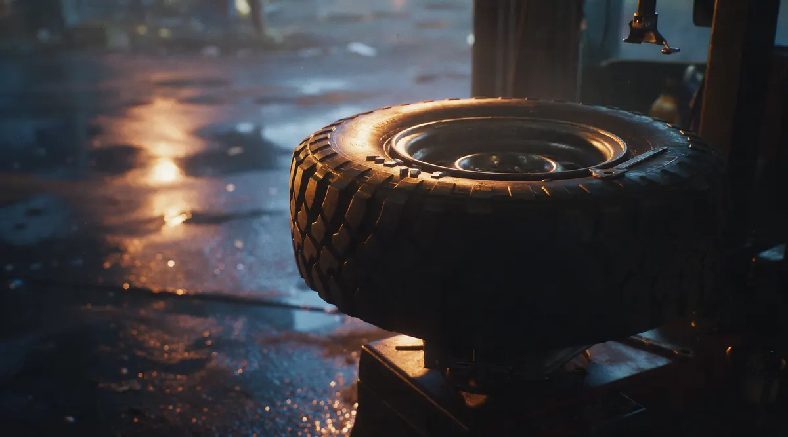
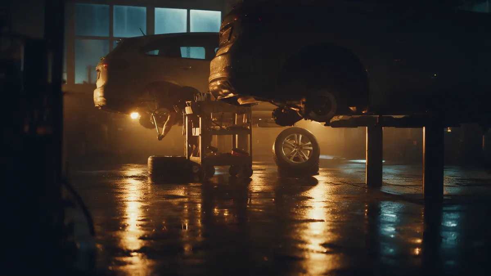
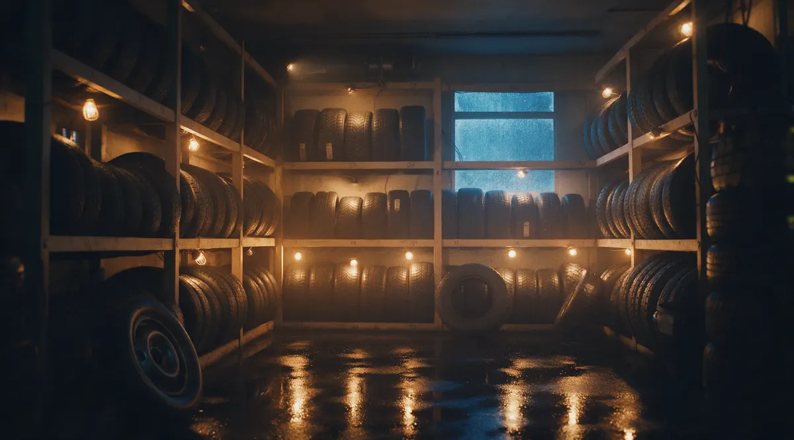

Легковые, внедорожники, грузовые
Шиномонтаж в Кандалакше: от легковых до грузовых, балансировка в ноль
Переобуем, очистим диск от старого клея, отбалансируем и сохраним шины до сезона. Запишитесь на время, мы работаем по записи.
- Грузовой шиномонтаж и хранение шин
- Оплата картой
- Пн–Пт 10:00–18:00, ул. 50-летия Октября, 1
Что входит в обращение
Входит
- Снять и поставить колёса
- Очистить диск от старого клея и грязи
- Балансировка и проверка после монтажа
Отдельно, если нужно
- Новые шины и грузики сверх обычных
- Нетиповые работы – оценка на месте
- Ремонт дисков и шин после повреждений
Цены на основные работы
Точную сумму называем по телефону или при записи, до начала работ.
Шиномонтаж
- Шиномонтаж легкового автомобиляуточнить
- Шиномонтаж внедорожника и больших колёсуточнить
- Грузовой шиномонтажуточнить
Балансировка и хранение
- Балансировка колёсуточнить
- Хранение шин (сезон)уточнить
Цены на сайте уточним с владельцем перед запуском.
Четыре шага, и на каждом ясно, что дальше
- 01
Записались или позвонили
Выбрали услугу, день и время.
- 02
Приехали к своему часу
Мастер занимается вашей машиной без очереди.
- 03
Сделали работу
Сняли, очистили, переобули, отбалансировали.
- 04
Оплатили картой и поехали
Платите как удобно, в том числе картой.



Что обещаем водителю
Берёмся за большие колёса
Не боимся нестандартных размеров, скажем честно, если не потянем.
Балансируем аккуратно
Очищаем диск, ставим грузики, проверяем результат.
Работаем по записи
Вы приезжаете к своему времени и не стоите в очереди.
Отзывы с Яндекс.Карт
«Заехали к ребятам на балансировку колёс, они большие молодцы, отмыли колеса, очистили от старого клея, выполнили точную балансировку и установили колеса назад, результат супер!»
Ольга · 1 ноября 2025
«Отличные ребята. Был проездом в Кандалакше, Справились с задачей при замена покрышек в размере 35 дюймов,хотя сказали что я первый с такими батонами, но будем пробовать. От-балансировали в 0.»
Prado653 · 10 августа 2025
«Работают по записи. Быстро переобули 2 машины вдвоем. Рекомендую.»
Виталий Чорномаз · 8 октября 2024
Отзывы с карточки на Яндекс.Картах, без правок.
Частые вопросы
Работаете с грузовыми колёсами?
Да, в карточке указан грузовой шиномонтаж. Тип техники называем при записи, подтвердим, беремся ли.
Можно ли оставить шины на хранение?
Да, хранение шин есть. Условия и цену подскажем по телефону.
Можно ли оплатить картой?
Да, оплата картой принимается.
Какие дни работаете?
С понедельника по пятницу, с 10:00 до 18:00. Суббота и воскресенье выходные, запись на эти дни закрыта.
Запишитесь на удобное время
- Адрес
- ул. 50-летия Октября, 1, Кандалакша
- Часы
- Пн–Пт 10:00–18:00, Сб–Вс выходной
- Телефон
- +7 (911) 343-48-88